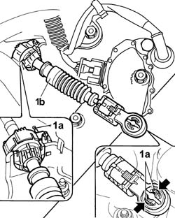
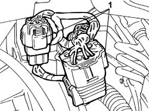
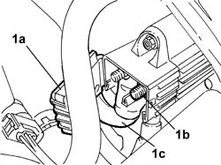
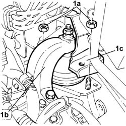
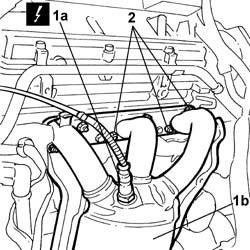

1080B39 RIGHT CATALYTIC PRECONVERTER - R.R. or Replace Gasket
- Path
- Procedures > 10 ENGINE > 1080 EMISSION CONTROL SYSTEM > 1080B EXHAUST EMISSION CONTROL SYSTEM > 1080B39 RIGHT CATALYTIC PRECONVERTER - R.R. or Replace Gasket
- Kind
- repair procedure (removal / refitting; the operation number is the code)
- Applies to
- engines: 2.0 TB, 2.4 20V, 3.0 V6, 3.2 V6; all production periods
- Interactive page
- https://sloeber94.github.io/elrnDB-lThss/en/#/187472
Applies to: engines: 3.0 V6, 3.2 V6; all production periods
 Removing
Removing
 Refitting
Refitting- Position the vehicle on a lift.
- Open the boot, remove the cover on the left hand side and disconnect the negative battery lead.
See in Op. 4450B04 Right FRONT WHEEL (one) - R.R.
- Raise the vehicle on the lift.
See in Op. 7055B64 Engine compartment DUST SEAL in front wheel arch (one), left or right - R.R.
See in Op. 7055B54 PROTECTION/GUARD under engine - R.R.
- Lower the vehicle
See in Op. 1048A21 AIR INLET HOSE FROM INTAKE TO FILTER - R.R.
See in Op. 1048A28 vacuum air circuit resonator pipe - r+r
See in Op. 1088B10 Engine coolant SUPPLY RESERVOIR - R.R.
See in Op. 1008C10 Power unit REACTION ROD - Replace
See in Op. 1048A11 COMPLETE AIR FILTER -R.R.
1. Release the retainers (1a) and disconnect the gearbox bowden cable (1b).

Applies to: engines: 3.0 V6, 3.2 V6; all production periods
1. Open the retaining band and disconnect the three gearbox main wiring connectors.

Applies to: engines: 3.0 V6, 3.2 V6; all production periods
1. Open the flap (1a), undo the nut (1b) fixing the starter motor supply lead (1c) to the junction node and move the lead between the junction node and the motor aside.

Applies to: engines: 3.0 V6, 3.2 V6; all production periods
- Position a hydraulic jack under the gearbox casing and undo the two nuts (1a) fixing the gearbox side engine support (1b) to the bracket (1c), then lower the jack until the gearbox casing is resting on the suspension frame.

Applies to: engines: 3.0 V6, 3.2 V6; all production periods
See in Op. 1072B50 Air CHAMBER - R.R.
1. Remove the front Lambda sensor (1a) from the right head exhaust manifolds (1b).
 | Description | Connector |
|---|---|---|
1a | Lambda sensor on pre-catalyzer | K015 |
2. Undo the nuts fixing the right head exhaust manifolds and move the actual manifolds aside in the direction of the engine compartment bulkhead, saving the gaskets positioned between the manifold and the cylinder head.

Applies to: engines: 3.0 V6, 3.2 V6; all production periods
- Raise the vehicle.
See in Op. 2710A31 INTERMEDIATE DRIVE SHAFT - R.R.
See in Op. 1084B30 CARTRIDGE ENGINE OIL FILTER -R.R.
See in Op. 1076B84 EXHAUST PIPE BETWEEN RIGHT PRECONVERTER AND CATALYTIC CONVERTER - R.R.
- Working in the lower part of the vehicle, remove the preconverter complete with heat shield bulkhead.
Applies to: engines: 3.0 V6, 3.2 V6; all production periods
Refitting
Removing- Working in the lower part of the vehicle, position the preconverter complete with heat shield bulkhead and gaskets between the head and manifolds.
- Lower the vehicle
- Tighten the nuts fixing the exhaust manifolds to the recommended torque.
 | Value - daNm | Fastening | Component | Ø |
|---|---|---|---|---|
. | 2.8 | Nut | CATALYTIC PRE-CONVERTER | M8 |
- Position the Lambda sensor and tighten it to the recommended torque.
| Description | Connector |
|---|---|---|
Lambda sensor on pre-catalyzer | K015 |
| Value - daNm | Fastening | Component | Ø |
|---|---|---|---|---|
. | 5.8 | Connector | LAMBDA PROBE (ONE) | M18 X 1.5 |
- Raise the vehicle.
See in Op. 1076B84 EXHAUST PIPE BETWEEN RIGHT PRECONVERTER AND CATALYTIC CONVERTER - R.R.
See in Op. 1084B30 CARTRIDGE ENGINE OIL FILTER -R.R.
See in Op. 2710A31 INTERMEDIATE DRIVE SHAFT - R.R.
- Lower the vehicle
See in Op. 1072B50 Air CHAMBER - R.R.
- Raise the jack positioned under the gearbox casing and tighten the two nuts fixing the gearbox side engine support to the bracket to the recommended torque.
| Value - daNm | Fastening | Component | Ø |
|---|---|---|---|---|
. | 5 | Nut | POWER UNIT GEAR BOX END RIGID MOUNT | M10 X 1.25 |
- Connect the lead between the junction node and the starter motor to the actual node and tighten the fixing nut, then close the protective flap.
| Value - daNm | Fastening | Component | Ø |
|---|---|---|---|---|
. | 0.5 | Nut | TERMINAL/MOTOR LEAD | M8 |
- Connect the main gearbox wiring connectors.
- Position the gearbox bowden cable and secure the retainers.
See in Op. 1048A11 COMPLETE AIR FILTER -R.R.
See in Op. 1008C10 Power unit REACTION ROD - Replace
See in Op. 1088B10 Engine coolant SUPPLY RESERVOIR - R.R.
See in Op. 1048A28 vacuum air circuit resonator pipe - r+r
See in Op. 1048A21 AIR INLET HOSE FROM INTAKE TO FILTER - R.R.
- Raise the vehicle.
See in Op. 7055B54 PROTECTION/GUARD under engine - R.R.
See in Op. 7055B64 Engine compartment DUST SEAL in front wheel arch (one), left or right - R.R.
- Lower the vehicle.
See in Op. 4450B04 Right FRONT WHEEL (one) - R.R.
- Connect the negative battery lead, then close the boot.
- Remove the vehicle from the lift.
See in Op. 0010T21 ENGINE COOLANT - Check density and top up if necessary
-
Applies to: engines: 2.0 TB, 2.4 20V; all production periods
- Operation not available
Topics linked from this page (13)
- 0010T21 ENGINE COOLANT - Check density and top up if necessary
- 1008C10 Power unit REACTION ROD - Replace
- 1048A11 COMPLETE AIR FILTER -R.R.
- 1048A21 AIR INLET HOSE FROM INTAKE TO FILTER - R.R.
- 1048A28 vacuum air circuit resonator pipe - r+r
- 1072B50 Air CHAMBER - R.R.
- 1076B84 EXHAUST PIPE BETWEEN RIGHT PRECONVERTER AND CATALYTIC CONVERTER - R.R.
- 1084B30 CARTRIDGE ENGINE OIL FILTER -R.R.
- 1088B10 Engine coolant SUPPLY RESERVOIR - R.R.
- 2710A31 INTERMEDIATE DRIVE SHAFT - R.R.
- 4450B04 Right FRONT WHEEL (one) - R.R.
- 7055B54 PROTECTION/GUARD under engine - R.R.
- 7055B64 Engine compartment DUST SEAL in front wheel arch (one), left or right - R.R.
Topics that link to this page (15)
- 1008A44 RIGID REAR power unit MOUNTING - R.R.
- 1020A20 CRANKCASE SUMP - R.R. clean contact surfaces and apply sealant
- 1020D08 FRONT crankshaft oil seal COVER - R.R. and replace seals with timing belt(s) removed for versions with automatic transmission
- 1020D12 Crankshaft oil seal FRONT COVER - R.R. and Replace seals
- 1056B90 SYSTEM CABLE LOOM - R.R.
- 1072C34 EXHAUST MANIFOLD, right side - R.R. and Replace Gasket
- 1076A72 RIGHT catalytic preconverter HEAT SHIELD - R.R.
- 1084C10 Engine oil heat exchanger - R.R.
- 1088D63 Alternator side flexible hose for alternator coolant return pipe - R.R.
- 1088D68 Connectors on coolant circuit alternator - R.R. or replace gasket
- 5520B10 STARTER MOTOR - R&R
- 5530A10 ALTERNATOR - R.R.
- 5530A40 Alternator BRACKETS/MOUNT/SPACER - R&R
- 5530B34 LEAD between junction unit terminal and starter motor - R.R.
- 5530B36 LEAD between starter motor and alternator - R.R.